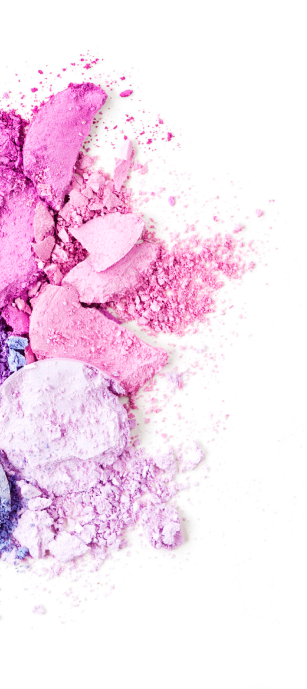
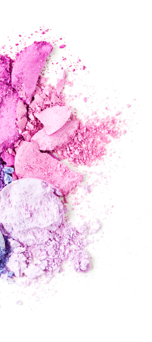

Adele, que adelgazó 45 kg, compartió su nueva foto y contó el secreto de su transformación

El 5 de mayo, la famosa cantante y ganadora de 15 premios Grammy, Oscar y Globo de Oro, Adele celebró su 32 cumpleaños. Recientemente ella estaba un poco a la sombra y ni siquiera actualizaba su cuenta de Instagram con demasiada frecuencia. Sin embargo, recientemente recurrió a las redes sociales para agradecer a las personas por escribir sus cálidos deseos para su cumpleaños publicando una foto de la cual los fanáticos se quedaron sin palabras.
Así se veía Adele en 2013, durante la 85a edición anual de los Premios de la Academia «Оscar»
Entonces la cantante también se veía muy linda y todo el mundo se acostumbró a su imagen, pero, según su confesión, ella misma se sentía muy incómoda de estar en ese peso al principio de su carrera, ella pesaba 132 kg, pero con el tiempo logró un poco adelgazar sin embargo, deshacerse completamente de exceso de peso no podía.
Y así, en 2019, después de divorciarse de Simon Konecki, Adele comenzó a adelgazar y sus fanáticos comenzaron a notar esto
Hoy en día la cantante se transformó por completo y mostró cómo se ve ahora, publicando una nueva foto para su 32 cumpleaños
Así es como se ve Adele ahora:
Ella no sólo adelgazo . ¡ también rejuveneció por al menos 10 años! Los fanáticos no pudieron evitar notar su increíble transformación y comenzaron a preguntarse ¡cómo lo logró en tan poco tiempo!
Adele no ignoró las preguntas de sus fanáticos y les respondió en el siguiente post. esto es lo que ella escribió:
Nunca he tenido complejos sobre
exceso de peso . Pero comencé a notar que mi estado de salud empeoraba, había dificultad para respirar y me di cuenta de que era necesario cambiar algo... Quiero estar sana por mi hijo.
Comencé con entrenamientos reforzados en los simuladores, cambié la nutrición, abandoné los malos hábitos, asi pude lograr un pequeño efecto, pero no lo que esperaba y más aún no logré el resultado que quería. ”
Casi al mismo tiempo, Adele descubrió gotas Slimagic sobre las cuales ya hemos hablado en detalle. SLIMAGIC - El concentrado natural para quemar grasas viscerales (profundas) y subcutáneas, hace un efecto complejo en el cuerpo, nutriendolo con vitaminas y minerales. El concentrado de plantas nutre el cuerpo con vitaminas A, E, grupo B, estimula la quema de grasa sin causar daño a la salud. Elimina las formaciones de celulitis en las caderas, el abdomen y los brazos ya en la segunda semana de uso. Tomar estas gotas no significa pasar hambre, incluso puedes beber vino tinto y comer chocolate negro que positivamente afectan el estado del sistema nervioso.

El año pasado, la cantante ganadora del Grammy comenzo a usar Slimagic para perder el peso, y los resultados que logró dejaron a sus fanáticos sin palabras. La cantante logró perder 45 kg en solo un par de meses y ahora se ve genial!
Esto es lo que escribió en sus redes sociales:
“ Lo más importante para perder peso es no provocar daño a la salud. Desafortunadamente, los métodos más populares de pérdida de peso no pueden presumir de esto. No puedes hacer una dieta todo el tiempo, y no todos pueden aguantarla. Al no haber logrado su objetivo, las personas recurren a las píldoras, la gran mayoría de las cuales solo debilitan el estado del organizmo, causando interrupciones en su funcionamiento. Pérdida de peso Debe ser natural y no perturbar los procesos internos del organismo. Hoy en dia, Slimagic - la única herramienta que cumple con estos desafíos. Los microelementos activos del tratamiento provocan una aceleración del metabolismo y la quema de grasa al menos 10 veces. Estoy convencida de que esto es la mejor solucion que existe hoy en día en la nutrición moderna. Y lo probé yo misma y logré resultados increíbles sin dañar mi salud. Opino que 45 kg en dos meses es un éxito!”
 Fuente: https://www.instagram.com/adele/
Así es como se ve la cantante ahora:
Fuente: https://www.instagram.com/adele/
Así es como se ve la cantante ahora:
“ Bebí Slimagic por las mañanas con un vaso de agua. . Y después de una semana me sorprendi gratamente con los resultados. Mi energía estaba al máximo, y al mismo tiempo no tenía hambre y no me agotaba con el entrenamiento. Una semana después, pesé y ya había perdido 4 kg. Continué tomando gotas por las mañanas y realizaba mis actividades diarias y el peso desaparecia por sí solo. En la cuarta semana estaba extasiada, mi peso disminuyó en 14 kg . ¡Después de dos meses de tratamiento, peso 45 kilogramos menos! Estoy muy contenta de poder compartir mis logros con ustedes, y aún más contenta de poder contarles cómo lo logré. ¡Sé saludable y cuida tu salud! ” entonces Adele termina su publicación.
Slimagic recibió la certificación en Grecia, y hasta que aparezca en las farmacias, la forma más confiable de comprar este producto es pedirlo en el sitio web oficial del proveedor. Esto garantiza su calidad y lo mantendrá alejado de las falsificaciones.
Para completar una solicitud, simplemente introduzca su nombre y apellido y número de teléfono para comunicarse en el sitio web oficial del producto "SLIMAGIC" y espere la llamada del encargado para confirmar el pedido
Comentarios
¡Oh, qué bien hecho, ha cambiado más allá del reconocimiento!!! La adoro)
ResponderLogre rebajar 31 kg. Anteriormente pesaba 94 kg. Recuerdo lo difícil que fue al principio que si va a funcionar o no, y que si es efectivo o no. Es difícil cuando uno no recibe apoyo, especialmente cuando tu sobrepeso es enorme, pero SLIMAGIC quemó todos los kilogramos, ¡no esperaba tales resultados!
Ya escuché sobre estas gotas e incluso las ordené. Las estoy tomando durante una semana y no lo creerán, ¡en estos 7 días bajé 3 kg y solo quedan otros 18! ¡Tendré éxito! Seguramente:)
Responder¡Debemos intentarlo si Adele tuvo éxito!
ResponderEstoy en shock!!! Esta mujer es ella, no lo puedo creer, ¿sera posible?
ResponderSí, probablemente hizo una cirujia .No ayudan, probé estas gotas. Es embuste y mentira.
ResponderHola Adriana y gracias por el comentario. Esta es una declaración muy extraña, ya que nuestro producto tiene todas las certificaciones y ha pasado pruebas clinicas. Después de consultar con nuestros especialistas, le recomendamos que revise su dieta diaria. Tal vez cuando lo tomaba, inconscientemente ha comenzado comer de más? Entonces la falta de progreso es explicable: ¿el producto ayuda, pero usted no hace un curso de tratamiento completo y no sigue las instrucciones? Gracias de nuevo por su comentario y que tenga un buen día.
ResponderComprobado, realmente comencé a comer más(((
ResponderEntonces le sugerimos comprar el producto, pero para un curso completo.
ResponderTal y cual, ¡gracias, por sugerencia!)
¡También logré perder peso! ¡Les deseo mucha suerte a todos, apoyo mentalmente a los que luchan con el exceso de peso!
ResponderA mí, como Adele, me ayudó mucho este producto. Una gran diferencia entre lo que fui antes y como me veo ahora. No esperaba que en mi edad pudiera perder casi 40 kg (hasta ahora -37 kg). ¡Mi bienestar es excelente! ¡Es una solución perfecta para las personas como yo! Recomiendo SLIMAGIC definitivamente! Aquí están mis resultados:
Antes de tomar las gotas SLIMAGIC, pesaba 90 kg. En mi juventud siempre fui delgado, y con la edad, mi barriga y los costados aparecieron de alguna manera. A los 35 años, me di cuenta de que necesitaba ponerme en forma urgentemente. Durante casi un año me dediqué al entrenamiento, pero no pude lograr mi objetivo. Luego añadi "SLIMAGIC" a la dieta y en pocas semanas me convirti en la persona que fui. Ahora cuido de mi figura, siempre tengo un par de paquetes de "SLIMAGIC"guardados en casa.
ResponderDespués del parto, si se aumenta de peso, es necesario eliminarlo con urgencia, eso se logra en la cinta de correr durante varias horas, pero escuché que es muy dañino para las articulaciones, porque esencialmente estariamos saltando con sobrepeso, las articulaciones simplemente no pueden soportar tal ejercicio. Pero existe opcion de tomar "SLIMAGIC " como yo, es muy conveniente para recuperarse. Es extraño que no todos aplican este producto.
ResponderTambién usé estas gotas. En solo 1 curso completo con "SLIMAGIC" perdi casi 30 kilos, cambios fueron enormes. Bueno, por supuesto que no he tragado pasteles, pero con el resto no me estaba limitando. Es algo que cuando quiero patatas, como patatas.
¿El sitio web oficial del fabricante es el único lugar donde puedes comprar "SLIMAGIC" en nuestro país o también se vende en tiendas en línea?
ResponderVanessa, desafortunadamente sí, dado que las farmacias están tratando de sacar provecho de las personas y estamos tratando de ayudarles con sus problemas de salud, se negaron a establecer el precio del fabricante, por lo que tenemos que vender por Internet porque por lo menos podemos establecer un precio que sea aceptable para ustedes.
ResponderGenial y si realmente funciona. Aunque soy escéptica. Y puedo creer más en el poder de un coctel que en unas gotas. Pero haré de todo para cuidar de la figura, las ordenaré.
ResponderHe estado bebiendo "SLIMAGIC" durante mucho tiempo. También tuve problemas con el peso, pero ahora ni siquiera lo pienso, como de todo y si aumento de peso, aplico el curso completo y vuelvo a la normalidad.
ResponderTENGO 97 KG. NO SÉ CÓMO COMBATIR MI SOBREPESO. NO QUIERO LLEGAR A TENER LOS 100 KG. ¿QUÉ HAGO????? ¡¡¡¡¡¡¡AUXILIO!!!!!!! ¿PUEDO COMPRAR EN UNA FARMACIA TAL SLIMAGIC?
ResponderRaquel, bueno, por supuesto, puedes buscar, pero yo solo lo encontré en el sitio web oficial del fabricante, y aun así es más confiable y seguro ademas puedes obtener un descuento.
ResponderBuenas tardes Raquel. Por el momento," SLIMAGIC " solo se puede comprar en nuestro sitio web oficial.
Responder